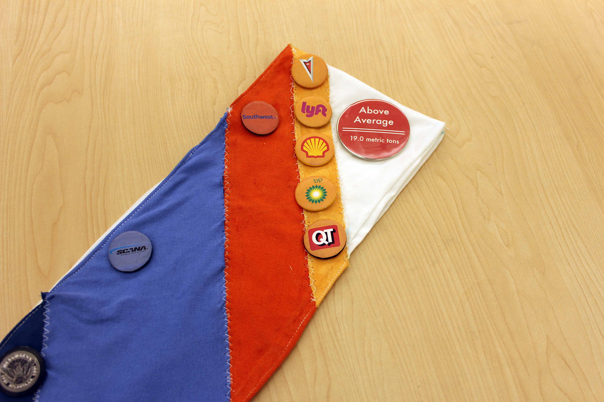
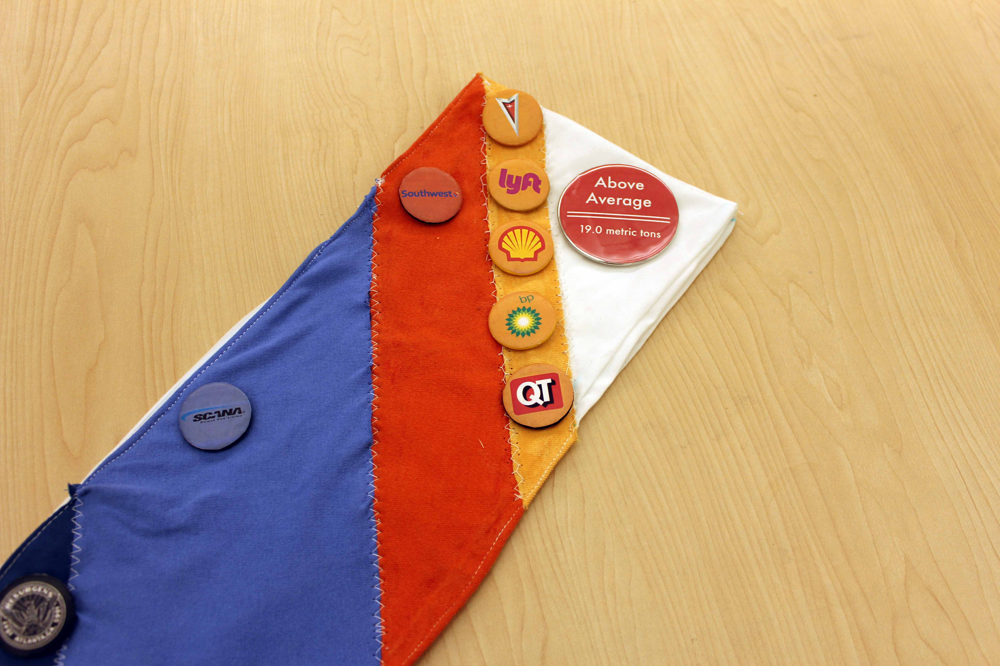

Wearable Carbon Footprint
March 2017 - May 2018
Overview
The wearable carbon footprint data sash is my master's project. It is an exploration of my personal carbon footprint and the impact of highlighting unseen data in our everday lives. This sash aims to stimulate conversation in public about the personal and systematic components of carbon emissions.
The sash itself has vertical color-coded bands that correspond to different emissions categories for my 2017 carbon footprint. In each category there are pins with logos of contributing corporations who helped enable these emissions (ex: airlines I flew with, my natural gas provider, retailers, etc.) The front of the sash is to-scale with the national average for emissions. Because my footprint was higher than average, it spills onto the back.
Project Details
Master's Project:
M.S. Digital MediaMy roles:
Brainstorming, Research, Design, Prototyping, User Interviews, Writing, Poster DesignProcess
Data Sculpture
I wanted my project to be a union of data and art, so I knew from the beginning that I would be adapting a dataset for display as a public artifact. Having an interest in environmental topics as well as tying location to content, I began with data focusing on Atlanta's tree canopy.
Originally, my ideas were for large data-based sculptures that could be displayed in Atlanta. For the first few months, these are what I had in mind as I researched precedents, interviewed arborists, and generally gathered my bearings for this project.


Data Research
My process began with broad research, which became gradually more refined. I researched informational art and precedent projects, analyzing the current works in this field. During this process, I identified key characteristics of what I felt made certain projects strong, such as tying location to content and making unseen forces visible.
In addition to the data field guide for the data walk project (in the next section), I interviewed city arborists, an Accela database administrator, various contacts at Trees Atlanta, and a contact at Georgia Tech's Center for Spatial Planning Analytics and Visualization. I learned about how Atlanta's tree canopy is surveyed and tracked over time, as well how we compare to other cities around the globe.
Data Walk
I have another page for my BeltLine Data Walk, but it also appears here because of how it helped to shape this project. Similarly to the master's project, I went into the data walk focusing primarily on Atlanta's tree canopy. However, by the end of it I had learned to incorporate the tree canopy into a broader conversation of sustainability.


{kind=link}
{kind=link}
Working on the BeltLine Data Walk shifted my focus to carbon footprints and was the answer to a question I'd had for quite some time: How do I make this data more personal? My audience for the data sculpture may live in Atlanta, but none of my ideas up to this point really confronted individuals with how they tie into the larger picture.
Shift to Wearable Data
In addition to making the data I would display more personal, I also shifted to displaying it on the body. This created a more complex and dynamic visualization naturally, and also shifted the project more easily into the social sphere. Rather than hoping people would converse while gathered around a data sculpture, I could more actively prompt conversations by creating an evocative artifact that is always with the wearer.

I considered various clothing types before choosing the sash, including hats, shoes, shawls, and full thematic outfits. I briefly considered doing outfits or accessories based on the various positive and negative aspects of the tree canopy, such as a pollen themed bodysuit or shade umbrella using a transparency map of Atlanta's tree coverage. A simple printed t-shirt was also a top contender for its widespread availability and ease of adoption.
I ultimately chose the sash for its simple elegance, as well as its social connotations. Sashes are known to display status, which I thought would work well for tying personal pride to a good overall carbon footprint (or shame for a poor one.) I was experimenting with adding button pins to clothing as well, and sashes with pins also evoke the idea of scouts and notions of civic duty. Additionally, as I found out during testing, sashes are unusual enough to easily draw attention.
Carbon Footprint Calculators
I collected my own footprint data using a carbon calculator, financial tracking software (Mint), utility bills, Google Maps, and MyFitnessPal. I began by choosing a suitable carbon calculator, as they can vary quite a lot. I chose The Nature Conservancy's calculator because it incorporates the most lifestyle factors in its categories: travel, home, shopping, and diet. In the end, I also weighted its final footprint assessment again outside research on the national average, for a more reliable baseline.

{kind=link}
{kind=link}


Paper Prototypes
I experimented with many different visualization styles on paper sashes, which I wore and tested with people in public. I experimented with encoding information in accessories, displaying data over time, and how to incorporate an intuitive baseline to compare the individual footprint size to.
{kind=link}
{kind=link}
{kind=link}
Fabric Sash
The final fabric sash was constructed using scrap fabric, printable heat-transfer vinyl, and painted button pins with printed images adhered onto them. I used a free children's pattern for the base, which I modified to fit my size.

{kind=link}
 

{kind=link}
{kind=link}

The main features of the sash are the vertical color-coded bands corresponding to different emissions categories: warm colors for travel, blues to home utilities, purple for shopping, and green for diet. In each category, there are pins with logos of companies that I generated those emissions in partnership with. These were collected based on frequency of occurrence, using my financial tracking software.
The front of the sash is to-scale with the national average for emissions, which is marked by the bottom seam. Because my footprint was higher than average, it spills onto the back. The back also includes a contextual comparison of North America's national average (which is almost exactly the same as the United States') to the rest of the world's.
Qualitative Testing of Interactions
Assessment of the sash's effectiveness to generate conversations and direct them in a productive manner started with the paper prototypes. Feeling confident with the content of the sash, I sought out further data with the fabric version. I wore it around campus, to the store, and at my demo day display.
{kind=link}
{kind=link}

{kind=link}
The fabric sash definitely drew attention and started conversations quite easily, even with strangers who would actually approach me and ask what it was about. Conversations about individual emissions were easy to have, but the logo pins also effectively invited a discussion of large-scale and systematic emissions issues. I also found a few flaws that could be improved upon during this process. Most notably, the area where the sash spills over the seam is awkward to display and involved explaining it while my back was turned.
Challenges
Huge Project Scale
This was my first project of this size so I learned a lot about how to tackle such a large and potentially intimidating task. I began by focusing mostly on planning and research, but ended up hitting a wall with my ideas. No matter how much I tried refining them, I just couldn't come up with anything that adequately addressed the problems I was having.
Eventually, I found that my creativity was stimulated more by jumping in and experimenting hands-on, rather than staying in my head and trying to plan out every aspect of the perfect project. Small prototypes often lead to unexpected inspiration. From now on, I think I will feel more confident making the long winding journey that a large project requires.
Industrial Emissions Dwarf Personal Emissions
An often cited rebuttal to environmental projects and products that focus on individual-level emissions is that they are dwarfed by industrial emissions. People would have a hard time making their footprint zero without A) Going off the grid or B) Spending a fortune on often questionable emission offset projects.
My response to this, given that my project is starting from a very individual level, was to incorporate industrial emissions into the design. After all, we collaborate with companies to produce our emissions, so it only seemed right that they should get credit for their role.
One of my favorite aspects of this solution was the way that the logos would now be interpreted in a negative light, since they are shown only in reference to how much carbon they help produce. This essentially makes the pins a subversive form of negative advertising.
Reflection
I believe this approach to carbon footprint awareness has potential as a teaching tool, as well as a practical application in the real world. I am a firm believer that generating discussion around issues is a way of culturally affirming that they matter. The next step for this project may be as a educational workshop, perhaps inviting children or adults to make their own carbon footprint data sashes. I have had several people mention to me that they see potential in the project as a an educational project for children, but I think it can also expand into the current realm of trendy eco-friendly practices and other mainstream forms of attention on sustainability.